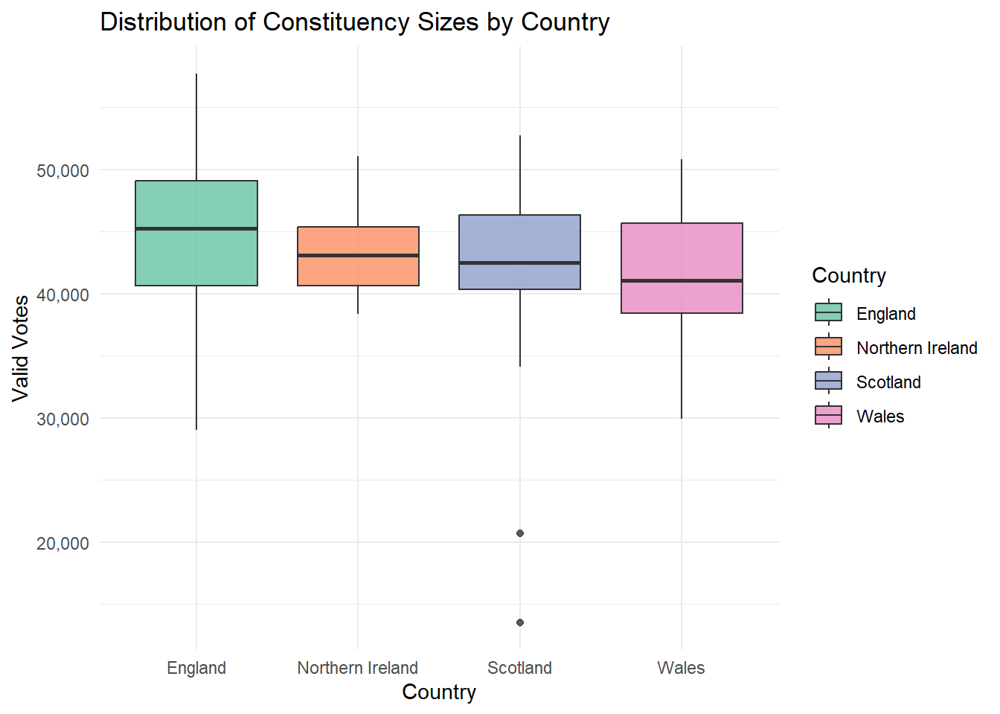
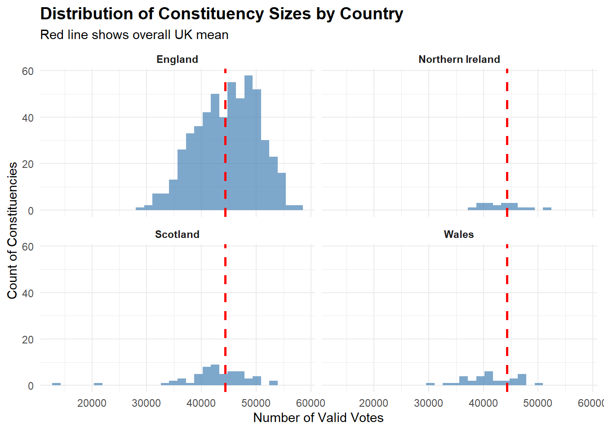

In this work I am showcasing here is derived from the dataset of the 2024 election results, looking specifically at the number of valid votes in individual constituencies, cross examining it with the local turnout and constituency location.
First the packages and dataset used must be loaded
library(tidyverse)
library(ggplot2)uk_csv <- "https://electionresults.parliament.uk/general-elections/6/candidacies.csv"
uk_raw <- readr::read_csv(uk_csv, show_col_types = FALSE)
names(uk_raw) <- names(uk_raw) %>% tolower() %>% str_replace_all("\\s+", "_")Then I cleaned up the data set
uk1 <- uk_raw %>%
filter(!`election_is_by-election`)
uk2 <- uk1 %>%
select(
constituency = constituency_name,
country = country_name,
valid_votes = candidate_vote_count,
electorate = electorate
)
uk3 <- uk2 %>%
group_by(country, constituency) %>%
summarise(
valid_votes = sum(valid_votes, na.rm = TRUE),
electorate = max(electorate, na.rm = TRUE),
.groups = "drop"
)
uk <- uk3 %>%
mutate(turnout_registered = 100 * valid_votes / electorate) %>%
filter(is.finite(turnout_registered), electorate > 0)This makes it easier to use for the following code chunk and data visualisation.
The following is a code chunk example:
smallest <- uk %>%
arrange(valid_votes) %>%
slice_head(n = 5) %>%
select(constituency, country, valid_votes, turnout_registered)
smallest## # A tibble: 5 × 4
## constituency country valid_votes turnout_registered
## <chr> <chr> <dbl> <dbl>
## 1 Na h-Eileanan an Iar Scotland 13528 63.4
## 2 Orkney and Shetland Scotland 20688 60.4
## 3 Manchester Rusholme England 29033 40.0
## 4 Kingston upon Hull East England 29816 42.2
## 5 Blaenau Gwent and Rhymney Wales 29922 42.7largest <- uk %>%
arrange(desc(valid_votes)) %>%
slice_head(n = 5) %>%
select(constituency, country, valid_votes, turnout_registered)
largest## # A tibble: 5 × 4
## constituency country valid_votes turnout_registered
## <chr> <chr> <dbl> <dbl>
## 1 Rushcliffe England 57744 72.9
## 2 Winchester England 57076 72.9
## 3 North East Hampshire England 55560 72.2
## 4 Horsham England 55499 70.1
## 5 Stroud England 55221 70.9This first chunk of simple code arranged the dataset into ascending order of valid votes, taking the top 5 constituencies in terms of lowest number of valid votes. It presents its name, country, number of valid votes and registered turnout percentage. The second chunk then arranged the dataset into the inverse, presenting the top 5 constituencies in terms of highest number of valid votes.
This is important to show as it gives us a better idea of where greater voter inequality might be taking place. It gives us an idea of where the smallest constituencies whilst also presenting how low turnout can get in those areas.
The Following is a Data Visualisation example:
ggplot(uk, aes(x = country, y = valid_votes, fill = country)) +
geom_boxplot(alpha = 0.8) +
scale_y_continuous(labels = scales::comma) +
scale_fill_brewer(palette = "Set2") +
labs(
title = "Distribution of Constituency Sizes by Country",
y = "Valid Votes",
x = "Country",
fill = "Country"
) +
theme_minimal() 
This data visualisation shows the distribution of constituency sizes by country within the UK. I use the ggplot function to create a visualisation of the previously created uk data set, opting to use a boxplot. The boxplot is used as it shows the median, interquartile range as well as outliers best. I then used scale_y_continuous and labels=scale::comma to format and modify the y-axis to better the data, with all values coming within a very particular range. I then set the colour palette to better present the data and labelled each axis and titled the visualisation.
The resulting visualisation I believe creates a good clear representation of the data. It shows that Northern Ireland has the most equal-sized constituencies, that Scotland has two major outliers but without them it is England that has the far most inequality in terms of constituency size.
Another way of creating a visualisation for this is through a simple histogram with an overall mean integrated.
overall_mean <- mean(uk$valid_votes)
ggplot(uk, aes(x = valid_votes)) +
geom_histogram(bins = 30, fill = "steelblue", alpha = 0.7) +
geom_vline(xintercept = overall_mean,
color = "red", linetype = "dashed", linewidth = 1) +
facet_wrap(~ country, ncol = 2) +
labs(
title = "Distribution of Constituency Sizes by Country",
subtitle = "Red line shows overall UK mean",
x = "Number of Valid Votes",
y = "Count of Constituencies"
) +
theme_minimal() +
theme(
plot.title = element_text(face = "bold", size = 14),
strip.text = element_text(face = "bold")
)
However, due to the large difference in number of constituencies between countries, I found this visualisation to be more difficult to read and the former example to be cleaner, however should you want to compare the average mean across all countries perhaps this is the better method.